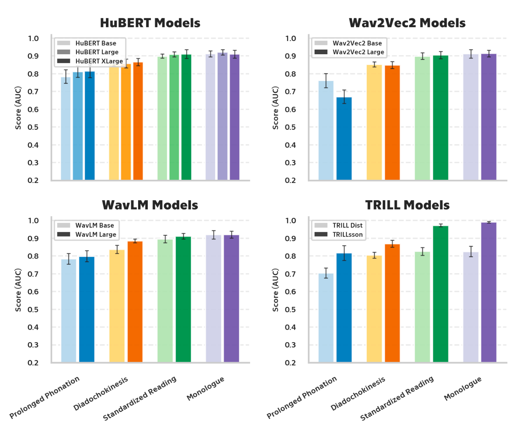
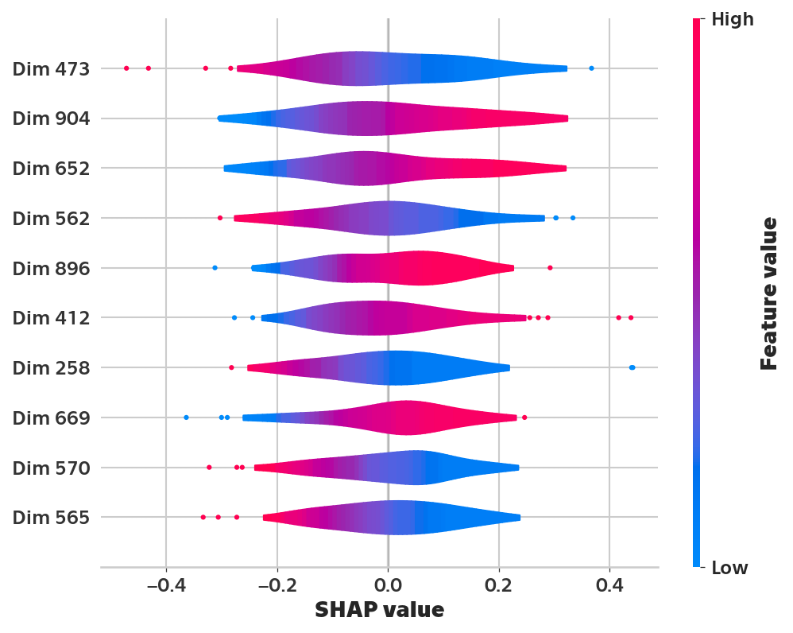
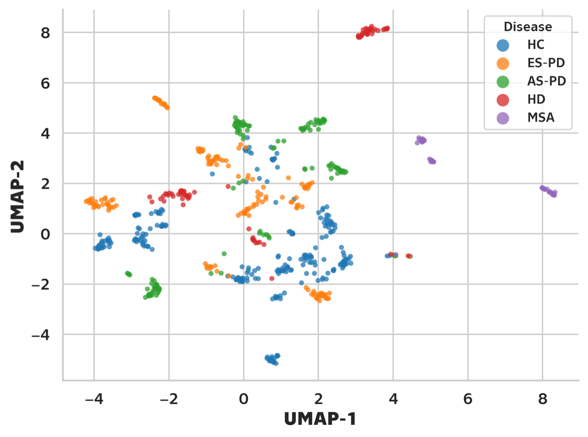

Prague, Czech Republic
AI in Healthcare Engineering · BSc Medical Electronics & Bioinformatics, CTU Prague
I build machine learning systems for medicine — researching voice-based screening for neurodegenerative disease, integrating real-time brain glioma analysis into a hospital's MRI workflow at CIIRC CTU, and previously building LLM evaluation & debiasing tooling at H2O.ai.
Research
Neurodegenerative diseases leave an audible fingerprint in speech — and the right representations can pick it up. I benchmarked ten self-supervised speech foundation models (WavLM, HuBERT, wav2vec 2.0, TRILLsson) against traditional acoustic features for classifying dysarthria across early- and advanced-stage Parkinson's disease, Huntington's disease, and multiple system atrophy. The best model distinguishes patients from healthy controls from a single spontaneous monologue — only a microphone required, no clinical equipment.
Model selection ran on patient-stratified nested cross-validation scores — guarding against data leakage — and the final evaluation on a held-out test set, where the best configuration, TRILLsson embeddings with logistic regression, reached a Macro F1 of 0.88 on the spontaneous monologue task.
Interesting part was interpreting the embedding dimensions themselves: SHAP, linear probes, and correlation analysis surfaced individual TRILLsson dimensions weakly but significantly tied to known acoustic markers — formant-based measures of vowel articulation above all, with others tracking the long-term average spectrum and pause duration. The models seem to rely on distributed acoustic information that partly overlaps with what clinicians already listen for. Voice-based screening won't replace a neurologist — but it could flag who should see one sooner.



Code on GitHub Read the thesis (PDF)
Deep learning that runs where it matters — inside the hospital. Selected for presentation at ECR 2026: a real-time system for multi-shell diffusion MRI analysis of gliomas, with a secure PACS-connected workflow and embedded models for molecular prediction and automatic segmentation.
ECR 2026 sessionExperience
Building the software that puts deep learning within clinicians' reach: the hospital-integrated, PACS-connected workflow of a real-time glioma analysis system for multi-shell diffusion MRI, plus a custom vein analysis toolkit — developed in collaboration with the Czech Military Hospital in Prague.
Helped make LLMs measurable: implemented generative-AI evaluators and fairness/debiasing methods in h2o-sonar, an open-source Python toolkit that ships in production inside H2O Eval Studio and H2O Driverless AI.
Took a school management system from idea to deployment, leading a team of five developers — selected for Start it @ČSOB, the accelerator of ČSOB bank (part of the KBC Group).
View on GitHubFaculty of Electrical Engineering — where signal processing and machine learning meet the clinic. Erasmus exchange at TalTech, Tallinn (2024).
Software
The quiet glue that keeps a school's systems in agreement — Bakaláři, copiers, library, and entrance management, synchronized.
View on GitHubHobby Projects
Cold coffee is a hardware problem. A USB-powered mug heater built on the STM32-F303K8 — adjustable temperature control, LED feedback, and buzzer alerts.
View on GitHub